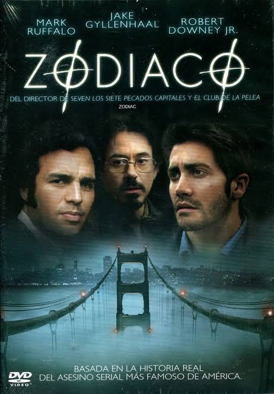
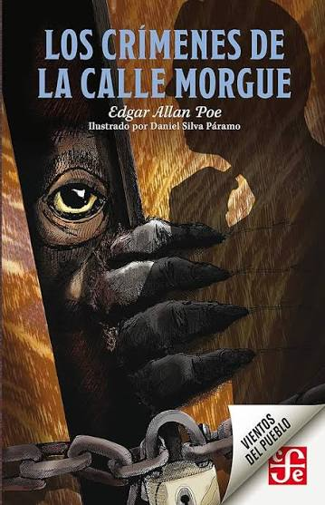

PELÍCULA
PELÍCULA
Sicario
Una agente del FBI se involucra en una peligrosa operación contra el narcotráfico en la frontera.
VER FICHA COMPLETA →Cada pista cuenta una historia. Cada sospechoso esconde un secreto. Adéntrate en un mundo de crímenes, investigaciones y misterios que desafían la inteligencia.
El subgénero policiaco se caracteriza por presentar historias relacionadas con delitos, investigaciones y la búsqueda de la verdad. Sus protagonistas suelen ser detectives, policías, investigadores o personas que intentan resolver un misterio. Las pistas, los sospechosos, los interrogatorios y los giros inesperados mantienen el suspenso hasta el desenlace.
Selecciona una película o el cuento para conocer su ficha, sinopsis y relación con el subgénero policiaco.
PELÍCULA
Una agente del FBI se involucra en una peligrosa operación contra el narcotráfico en la frontera.
VER FICHA COMPLETA →
PELÍCULAInvestigadores y periodistas intentan descubrir la identidad de un misterioso asesino serial.
VER FICHA COMPLETA →
CUENTOUn investigador utiliza la lógica y la observación para resolver un crimen aparentemente imposible.
LEER INFORMACIÓN →